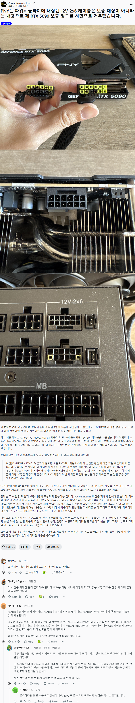

MSI SUPRIM 가자
프니프니
이제 커넥터 방식을 바꿔야 하지 않을까?
ㄹㅇ 그냥 파워서플라이처럼 따로 꽂아야된다고봄. 구녕이 작은데 여러개놓으니 안정성문제가 나오는게아닐까싶음
8핀 = 전원핀 3개
12VHPWR = 전원핀 6개
8핀 2개로 최대 600와트 땡겨가는데 핀사이즈는 더 작은 모양새 ㅋㅋㅋ
약관에 있으면 어쩔 수 없지
8핀 3개 문어발 거지같아서 못쓰겠던데
12v 직결 케이블도 조금 구부려서 쓰면 불난다고 해서
빅타워인데도 시소닉 90도 변환케이블 정품으로 샀음
저 병신 파워 커넥터 설계가 만악의 근원임
이전 8핀 3개 꽂던 세대때 이정도로는 문제가 없었는데
이제 글카는 별도 전원선 있어야하는거 아니냐ㅋㅋ
5090 이면 소송 가야겠는데..?
저거 수리 해준다해도 조심해야함..
보냈는데 안돌려주는 케이스도 뜨더라 ㅋㅋㅋ 여기서 수리 불가라면서 ㅋㅋ
안돌려주는건 뭐야 그냥 돈날리는거?
강도당한거라 봐야된다는거임..
반쯤 에어컨 수준의 전력을 쳐 먹는데
물리적으로 저정도 사이즈의 전력선은 문제가 생길 수 밖에 없음..
아직도 불나네 12볼트 저건 진짜 망작인듯
핀 사이즈 진짜 작네.. 커넥터 연소되는 이유가 있구만
8핀 3개 꽂는게 더 안정적일거 같은데
pny는 리더스급 메모 해놔야지
풍년?
갤럭시최고야
조탁써라...